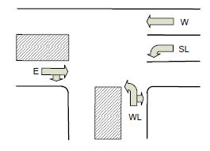

Complex state machines: a traffic light controller
Mirrored from EECS 270. This is a copy of the EECS 270 Lab 6
handout, kept here because EECS 470 uses it as the proficiency exercise for a
prerequisite override — see Prerequisites on
the Policies page.
Original: eecs.umich.edu/courses/eecs270/270lab/270_docs/lab6b.html,
revised 2/24/19. References below to “the lab web page”, the lab schedule and
the tutorials point back to EECS 270's site. If the original changes, this
copy will not.
1Overview
It is often the case that a real world problem requires a fair bit of
complexity and multiple devices working in tandem. In this lab you will design a
state machine that controls a set of traffic lights.
Your state machine will also interact with another device: a 4-bit binary
counter. Your state machine will control that counter and use it
as an input. This type of interaction between a state machine and another device
is fairly common — and in this case it greatly reduces the number of states
needed.
2Preparation
It may be helpful to review the Verilog sequential logic tutorial on the main
lab page regarding FSM design and organization. See Vahid “Common Pitfalls” in
section 3.4, Controller design.
3Design specification
This lab will be implemented entirely in Verilog.
In this lab there are 4 inputs (the traffic sensors) and 4 outputs (the
traffic lights associated with each sensor), as well as a reset. The sensor
names are:
W
West-bound straight
E
East-bound straight (and right south)
WL
West-bound left (and east right)
SL
South-bound left
Each sensor is either on (indicating a car is present in that lane) or off
(indicating no car is present).
The traffic lights associated with each direction have the same name, but end
in a “TL”. So ETL is the east-bound straight
traffic light. Each light can be Green, Yellow or Red.
You do not need a right turn light for the east bound (ETL)
and west left (WLTL) traffic lights. Assume the driver will yield to traffic.

Figure 1. The intersection
The system clock is assumed to have a period of 1 second.
Your traffic light controller is to follow the rules below. These rules are
not a complete specification: there is some ambiguity in what to
do in certain situations, and you need to pick some reasonable behavior for
those.
Two lanes of traffic are considered to “conflict” if having both of them
going at the same time could cause a collision — that is, if their paths cross.
For example, having both the east-bound straight light and the south-bound left
light Green or Yellow at the same time could cause a collision, so those lanes
conflict with each other.
No two lanes in conflict should have Green or Yellow at the same time.
When a light is to change from Green to Red, it should be Yellow for
exactly one second in between the Green and Red. A light may never go from
Yellow to Green, nor from Red to Yellow.
There should be no starvation. That is, if a given sensor is on, its lane
should get a Green light at some point, no matter the state of the other
sensors.
When sensors for two conflicting lanes are on, no one direction should be
Green for more than 10 seconds.
When only one sensor is on, that light must become Green as quickly as
possible and stay Green until some sensor input changes, without violating the
other rules.
No Green should be less than 3 seconds in duration.
When no sensor is on, the default configuration should rotate through
different states so that all lights are Green at some point — so if all the
sensors stop working, no one will have to wait forever.
You should not give a lane a Red light when there is no traffic conflicting
with that lane. In other words, it should never be the case that a given light
could be Green (at the same time as another lane) but isn't.
The controller should have a reset. When reset is high the system should go
to (and stay in) some legal state. As in the previous lab, this should be a
synchronous reset.
If there are exactly two sensors activated for non-conflicting lanes, both
of these lights should become Green as quickly as possible without violating
the other rules.
The traffic lights should behave in a way that you think would best move
traffic through the intersection given the above rules.
The counter
All timing-related issues greater than 1 second are to be
handled by a 4-bit saturating counter. You may use the Verilog operators
>, < and == to compare to the current
value of the counter. The only control you have over the counter is a reset line.
The counter reset is independent of the system reset — you may want to label it
counter reset in your design. A counter module is provided for you (on the lab
web page).
Mapping inputs and outputs
The clock is to be the left-most push-button.
The sensors W, E, WL and SL should be mapped to dip switches 3 to 0 in that
order.
The traffic light status should be displayed on the hex displays 3 to 0 in
the same order as their respective sensors:
When Red, the display should be “r”.
When Green, the display should be “g”.
When Yellow, the display should be “E”.
The counter should be displayed as an unsigned number on the left-most hex
displays. You may do this in decimal (2 hex displays) or hex (1 hex display).
You may copy a hex decoder from the web or other source (not a fellow
student) if you wish — if you do, you must cite where you got it from in
your post-lab.
Finally, we strongly suggest you write the state machine the way that we show
in the sequential logic tutorial. You are required to have separate always blocks
for the next-state logic and the output logic.
4Design notes and hints
The best starting point is to figure out how many “basic” states you will
have. That is, how many different states have only green and red lights? Draw
those states, then think about what you want to do when transitioning between
them.
Think about how to use the counter. If you find yourself doing complex
comparisons, you are probably doing something wrong. Also think about when you
will need to reset the counter.
Make heavy use of Verilog macros or parameters, both to name the states and
to describe the outputs to the hex displays.
You may need to add other inputs or outputs (reset for the counter,
perhaps?).
You should need no more than four bits to keep track of the state, though
the instructor's solution uses only three.
To plan your state transitions, you may find it helpful to designate a
“default” rotation (which satisfies rule 8). Then think about what input
combinations would require your machine to deviate from this default rotation.
If you think about the transitions out of a particular state in terms of
if/else statements, the special cases would be the “if” and the default would
be the “else”.
The pushbuttons (KEY 3–0) bounce. That is, they produce more than one
transition (high to low or low to high) when you push or release them. Since we
will use one of the pushbuttons as a clock, the consequence will be that you
get more than one clock edge when you push or release the button. This will
make it difficult to debug or demo — your state machine will potentially go
through several state transitions with each key press. There is a way to
debounce switches with Verilog; see the document posted with this lab entitled
“debouncing switches” for the details.
You should not be assigning values to individual hex segments.
Instead you should be assigning to all of the hex segments in a given display
at once. So ETL = 7'b1111010; — or better yet
ETL = Red;, where Red is a parameter set to
7'b1111010 — rather than:
ETL[0] = 1;
ETL[1] = 1;
etc.
Your output logic should look similar to this:
Bob:
begin
ETL = Green;
WLTL = Red;
SLTL = Red;
WTL = Green;
end
5Deliverables
Pre-lab 25 points
This traffic control can be managed with 3 green and red light
combinations. For example, W = G, E = G, WL = Red, SL = Red is one such state.
Provide the other two. 2
Now draw a state diagram with these 3 green/red light states and yellow
light states in between. 3
Assume that you have an n-bit variable named COUNTER with a single bit
reset control called CREST that is clocked with a 1 second clock. Add the state
transition equations to the state diagram that will implement the case for all
the sensors off and all the sensors on. 5
Now consider the case when the east-bound sensor is active. Add the
necessary transition equations or terms to the state diagram and draw a
rectangle around them. 5
Now consider the case when the east-bound and west-left sensors are active.
Add the necessary transition equations or terms to the state diagram and draw a
circle around them. 5
Now consider the case when the east-bound, west-left and south-left sensors
are active. Add the necessary transition equations or terms to the state
diagram and draw a dashed rectangle around them. 5
This is all you have to do for the pre-lab, but you will have to implement the
other sensor combinations to complete the problem.
In-lab 45 points
Demonstrate your working traffic light controller with all the conditions
implemented. Consider connecting your state register to some other LEDs to
monitor your state when debugging. Also, try implementing the cases listed in the
pre-lab first to see if you can get those to work, and then add the remaining
conditions step by step.
Post-lab 30 points
Submit answers to the following questions. State which FSM model you used to
implement your design (Moore or Mealy).
List the inputs and outputs for the next-state logic (remember that next
state is a function of sensor inputs, current state, and count). How many rows
and columns would this truth table have? 5
List the inputs and outputs for the output logic (hex outputs are a
function of current state). How many rows and columns would this truth table
have? 5
How many states are there in your FSM? How many D flip-flops are required
to hold all of these states? Do you have unused states? If so, how many?
5
If you had used a one-hot encoding, how many D flip-flops would you need?
5
Determine the Boolean function for segment 3 (the fourth segment) of the
WTL 7-segment display. Provide the minimal SOP and K-map.
10